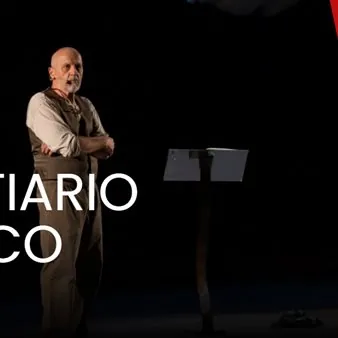

ven 4 dic · dalle 20:45
Stagione teatrale 2026/2027: Bestiario idrico
Bestiario idrico parla di fiumi e bestie d’ogni genere, narra storie di vita biologica e sociale legate ai fiumi. Narra dei conflitti e dei contratti che intorno all’acqua dei fiumi hanno dato forma a quel paesaggio che oggi riconosciamo come il nostro. Rende visibile il legame…
 Indicazioni
Indicazioni
- Costi e prenotazioni
- Costo non indicato · Prenotazione non indicata
- Programma
- Programma da verificare. Apri la fonte ufficiale per orari e possibili aggiornamenti.
- In caso di maltempo
- Nessuna indicazione specifica pubblicata.
- Note
- Acquisito automaticamente dalla fonte.
L’EVENTO
Descrizione completa
Bestiario idrico parla di fiumi e bestie d’ogni genere, narra storie di vita biologica e sociale legate ai fiumi. Narra dei conflitti e dei contratti che intorno all’acqua dei fiumi hanno dato forma a quel paesaggio che oggi riconosciamo come il nostro. Rende visibile il legame stretto tra le forme di governo dell’acqua e la qualità della vita sulle rive, non solo di una specie ma dell’intero ecosistema.
Venerdì 4 dicembre - Ore 20.45
Le opere idrauliche tendono a diventare invisibili, a confondersi con l’ambiente che le contiene. Succede agli argini di terra battuta, alle golene, ma anche alle stazioni di pompaggio, ai canali, ai serbatoi e perfino alle dighe. Il paesaggio italiano diventa agricolo per stratificazioni di insediamenti durati secoli. Anche città e paesi si insediano (e si spostano…) per secoli. Le industrie solo da poco più di un secolo. Le opere idrauliche accompagnano ognuno di questi passaggi; non solo gli acquedotti dai romani in poi, ma le deviazioni e le arginature a volte imponenti, le opere di bonifica, i serbatoi idroelettrici, le reti di smaltimento. Il paesaggio italiano è artificio ma la rete delle opere idrauliche sfugge alla nostra percezione.
Un ponte è opera viaria o idraulica? Il wc o il rubinetto sono pezzi di edilizia civile o terminali di opere idrauliche? Quanto sarebbe diverso il paesaggio agricolo senza la circolazione di acqua di irrigazione e senza canali e pompe di smaltimento degli eccessi di pioggia?
Niente di tutto quello che vediamo è definitivo. Il cambiamento climatico impone di prendere in considerazione radicali cambiamenti del paesaggio che ci è familiare: potremo subirli o deciderli. I fiumi in Italia sono più di 6.000 molti di più i corsi d’acqua che non hanno diritto a un nome, ma fanno parte dei bacini idrografici. L’Europa conta 110 bacini idrografici l’Italia ne ha 7. Ciascuno contiene centinaia di corsi d’acqua più o meno importanti, ma ugualmente strategici, assieme all’acqua delle falde sotterranee, nel bilancio idrico nazionale.
uno spettacolo di Marco Paolini
scritto con Giulio Boccaletti
collaborazione alla drammaturgia: Marta Dalla Via, Diego Dalla Via, Michela Signori con Marco Paolini e con Patrizia Laquidara regia di Fratelli Dalla Via assistenza alla regia: Teresa Vila, cura delle musiche di Giuseppina Casarin, elementi scenici di Mirko Artuso, direzione tecnica e fonica di Piero Chinello, disegno luci e scene di Michele Mescalchi, luci di Nicola Munerati
assistenza tecnica: Città Invisibile
grafica e foto di scena: Gianluca Moretto produzione: Michela Signori
in coproduzione con Jolefilm e Teatro Stabile del Veneto – Teatro Nazionale
Informazioni tel: 0431 85834 / biglietteria@ertfvg.it
Biglietti e prevendite ACQUISTA ONLINE BIGLIETTI:
Interi € 24,00 / Ridotti € 21,00 / Riduzione per over 65, under 25 e abbonati a una Stagione ERT. BIGLIETTI GRADO TEATRO:
Posto Unico € 5,-
omaggio per gli abbonati della Stagione teatrale PREVENDITA: Online da lunedì 19 ottobre su ertfvg.it
in Auditorium i due giorni prima dello spettacolo dalle 15.30 alle 18.30 e il giorno dello spettacolo dalle 17.30 a inizio spettacolo.
IL PROGRAMMA
Programma e orari
Appuntamenti raccolti dalle fonti elencate. Dove manca un orario, non è ancora disponibile in questa scheda.
Programma pubblicato
- Dal 2026-12-04 al 2026-12-04
INFORMAZIONI UTILI
Prima di partire
- Controllare la fonte prima di partire.
ORGANIZZAZIONE